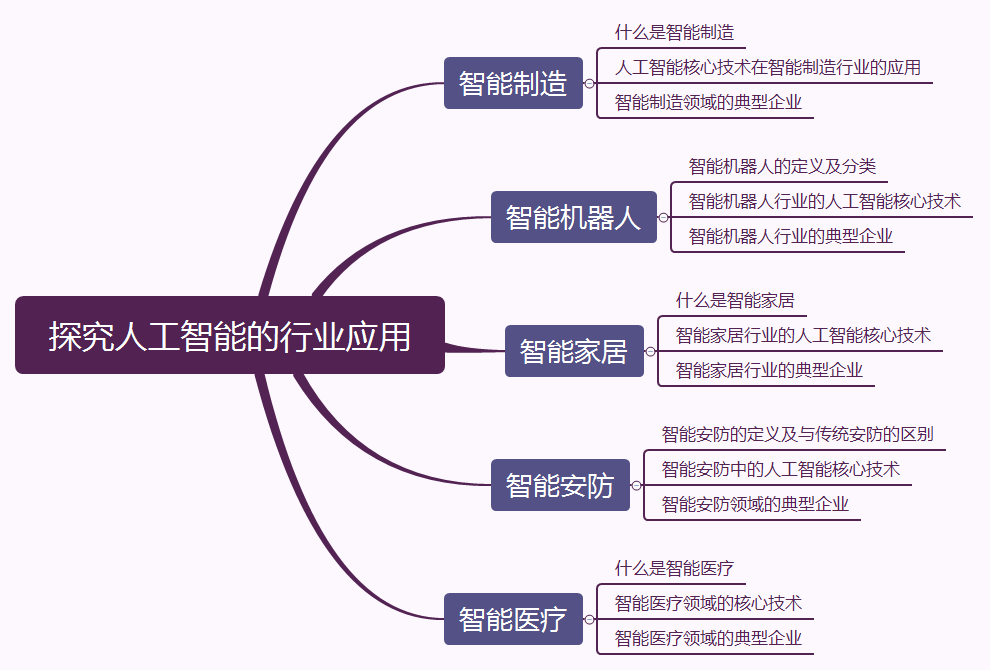
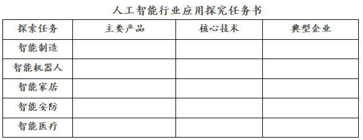

项目四 探索人工智能的行业应用
项目情景
习近平总书记指出，人工智能是引领新一轮科技革命和产业变革的重要驱动力，正深刻改变着人们的生产、生活、学习方式，推动人类社会迎来人机协同、跨界融合、共创分享的智能时代。《新一代人工智能发展规划》提出到2030年，中国成为世界主要人工智能创新中心，人工智能核心产业规模超过1万亿元，带动相关产业规模超过10万亿元。
人工智能正变得愈发聪明。人工智能也变得更加“温暖”。人工智能新技术切实融入生产生活，各行各业正快速实现智能化，智能经济方兴未艾，一幅智慧生活的新画卷正在神州大地徐徐展开。让我们一起探索人工智能在制造、家居、机器人、安防、医疗、教育等行业的应用吧。
项目导览

项目目标
- 能够感受人工智能技术为各行各业带来的影响
- 能够感受人工智能技术对未来职业岗位的新要求
- 了解智能制造、智能家居、智慧医疗等行业应用到的人工智能技术
- 把握人工智能时代的机遇和挑战
项目规划

项目探究
- 人工智能作为新一轮产业变革的核心驱动力，对传统行业带来哪些影响？
- 世界各国把发展人工智能作为提升国家竞争力、维护国家安全的重大战略，分别出台了哪些规划和政策？
- 人工智能对我国社会建设经济建设带来哪些新机遇。